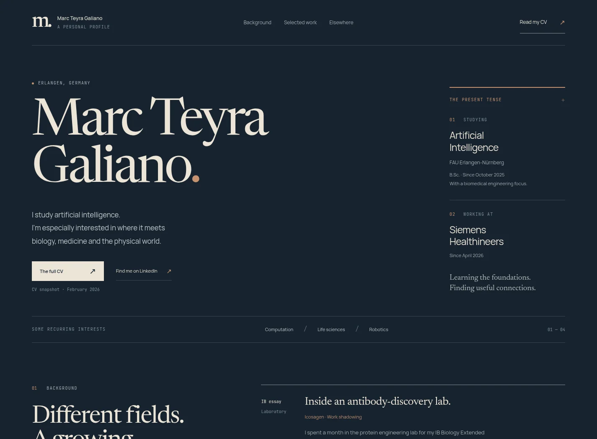
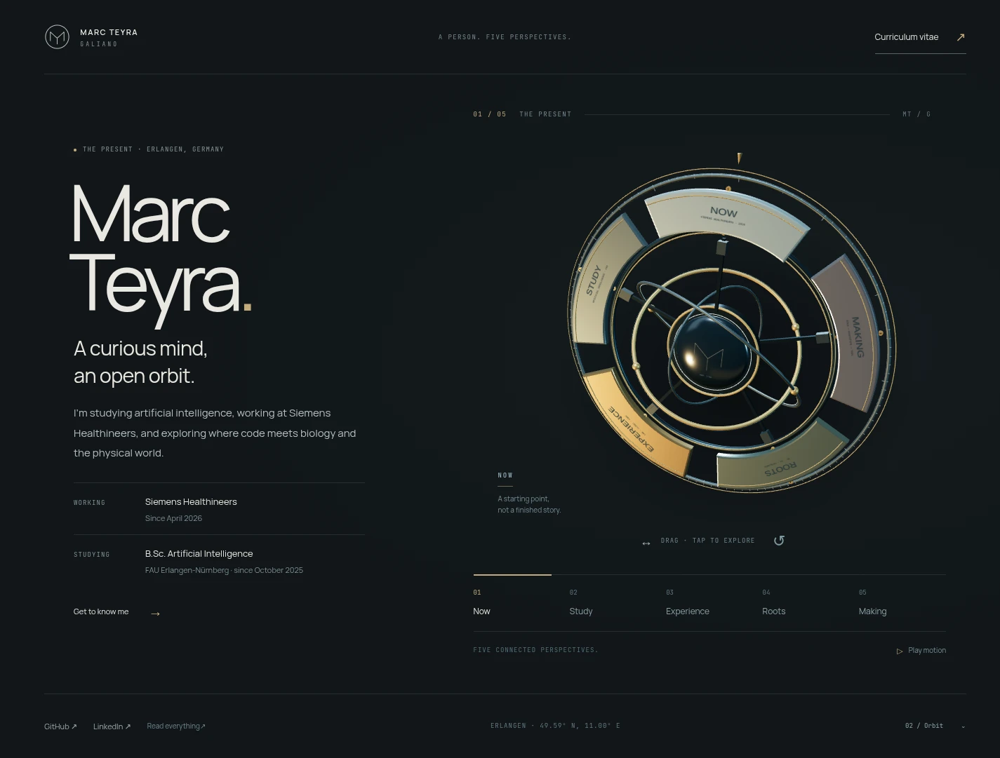
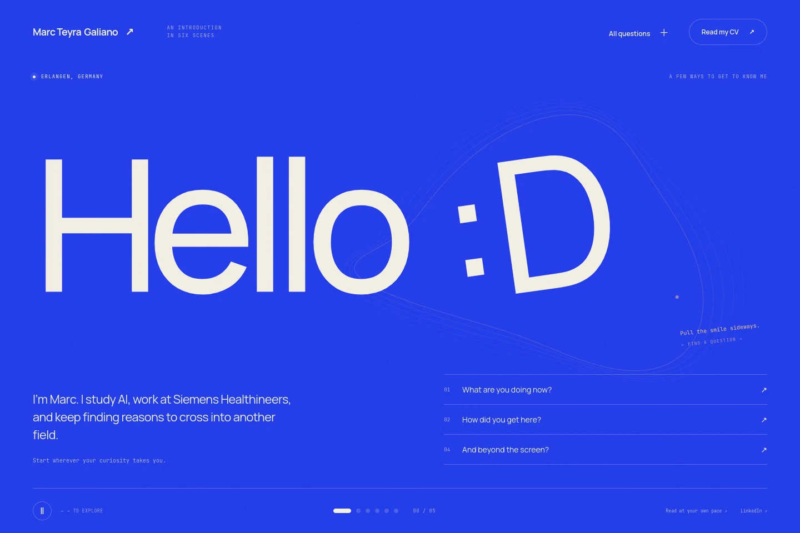

01↗STATIC / EDITORIAL01
Profile.
A carefully composed introduction. Current direction, background and life beyond work, with the clarity of a well-edited CV.
Read the profile ↗Different experiences of the same story.
A clear profile. A physical orbit. An introduction you can take in any direction.

01↗A carefully composed introduction. Current direction, background and life beyond work, with the clarity of a well-edited CV.
Read the profile ↗
02↗Five perspectives on the same person. Turn a physical instrument to explore study, experience, roots and the things I make.
Explore the orbit ↗
03↗A conversation in six scenes. Pull the smile to find a question, move through the years, and follow whatever makes you curious.
Start somewhere ↗